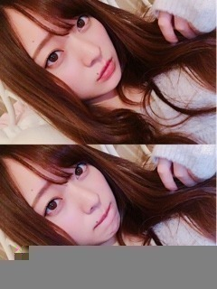
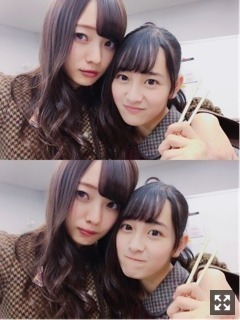
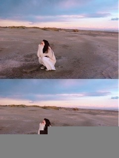
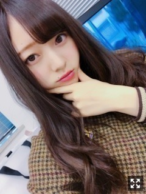

知らなかったことがもったいないくらい面白い。梅澤美波
みなさまこんにちは！！
乃木坂46 ３期生の
梅澤美波です！！

どーーーーーーも
こんばんは☺︎
１２日ぶりですね◎
寒くなってきましたね☺︎
買ったコートがあたたかすぎて無敵( ˙-˙ )౨
あっという間にあと半月で今年も終わってまう、、( .. )
１日１日が濃すぎて時間の進み方を忘れてしまう( .. )
ちなみに、梅澤はもう既に
今年初雪をある場所で見ております☺︎
異様にテンションあがるよね☺︎
今年はどのくらい降るかな〜
この間、久しぶりに映画を家で見て
泣きました☺︎（笑）
そしてアニメを見ても泣きました☺︎（笑）
映画館の雰囲気大好き人間なので
ひとり映画でもいってこようかしら〜
１３日放送の
FNS歌謡祭第2夜、
出演させていただきました！
告知できずですみません、、
見つけてくださりましたか？( .. )
私は山崎育三郎さんとのコラボレーション
「Congratulations」に
出演させていただきました！
男性役、女性役で
ペアでの参加でした☺︎
ペアは大好きな新内さん( .. )♡
お姉さん☺︎☺︎
この楽曲への参加は
先輩方に交えてでとても緊張しましたが
とにかく楽しもう！と思い
自分なりに頑張りました、、( .. )
去年３期生とひらがなけやきさんが
初出演させていただいてから
約１年、、、
またこうして出演させていただけたこと
本当に嬉しく思います。
育三郎さんの歌声、
テレビで聴くたび素敵だなあと、
今回コラボレーションさせていただいて
リハーサルから歌声に癒されっぱなしでした( .. )
とても良い方で紳士で良い意味でリラックスして挑めました☺︎
ご一緒させていただけて光栄でした。
本当にありがとうございました！☺︎
ポケモンチームの放送は
録画で見たのですが、
可愛くって素敵すぎたし
生田さんの歌声は
楽屋で見てて鳥肌立ちました。
涙が出そうになったくらい
本当に素敵で、感動しました。
とっても綺麗だったなあ(；；)
松村さんのハレ晴レユカイは
可愛いが詰まりすぎてて
心が苦しくなった、、
あの衣装が似合う女性になってみたい( .. )
あとね、
FNSの日、欅坂46さんの土生瑞穂さんが声をかけてくださって
写真撮ってくださったの( .. )♡
やっと逢えた！って(；；)
嬉しすぎました、、
土生さんは初期からずっと推しメンで
背が高い共通点もあり
わたしもずっとお会いしたくて( .. )
人見知り発動して全然話せなかったのだけど
今度ゆっくりお話したいなあ(；；)♡
あと本番前に白石さんが
みかんくれたから頑張れた( .. )♡（笑）

だいすきはじゅ〜
お箸もってるの、食べてるはづがいっちばんすき、ほんとうにかわいいなあ〜
NOGIBINGO!9の妄想リクエスト
見ていただけましたか？？
梅桃での参加でした！
恋のライバル！
わたし悪いヤツですよね〜（笑）
悪い女の子っぽい役、
憧れがあったから嬉しかったです！
ももこの可愛いが引き立ってたらいいなあ☺︎
撮影はね〜妄リクが初めてだったので
緊張するかと思いきや
ももこがいたから全然そんなことなくて
楽しみながら笑顔いっぱいで
撮影に挑めました、楽しかった☺︎
まさかの１位も頂いてしまって
もう満更でもなかった梅桃でした◎（笑）
収録終わったあと、
松村さんが声をかけてくださって
梅ちゃんのキャラめっちゃ好き！応援したくなる！
って、、( .. )嬉しかった( .. )♡
また出来たらいいなあ☺︎
質問コーナー◎
Q.一人鍋なに食べたの？
A.キムチー！！！！鍋がデカすぎてすっかすかで寂しさ倍増だったけど味は１００点◎
Q.小腹が空いたら何食べますか？
A.最近はずっと韓国のり！！それとフルーツ！
Q.仮面ライダーどこまで見てたの？
A.電王、キバ、ディケイド、ダブル、オーズ、フォーゼ まで見てました！！毎週の楽しみだった（笑）ベルトもキバからフォーゼまで弟が持っていたので私も一緒に遊んでました( ¨̮ )（笑）
戦隊ヒーローも、ゴーオンジャー、シンケンジャー、ゴセイジャーは見てました☺︎懐かしい〜
女の子〜☺︎
Q.最近のおすすめコスメは？
A.SUQQUのアイシャドウです！！ピンクの色が可愛くってこの季節少しピンク入れるだけで華やかに可愛くなるし、このアイシャドウラメが本当に細かくて上品だからとても綺麗になります！また詳しく書くね◎！
昨日１５日発売！
EX大衆さまのオフショットです！！

前髪あげました。（笑）
初挑戦。（笑）
おデコ広いのがコンプレックスなので
戸惑いましたが
さらけ出しちゃえ！！と思い
頑張りました！！（笑）
恥ずかしがってる梅澤です。（笑）
テーマが"優しさ"とのことで、、
普段の私のグラビアでは珍しい
新しい一面が見られると思います。
撮影も終始楽しくルンルンで
させていただきました、、幸せでした。
お洋服もメイクもナチュラルで
とても自然体な私が見られると思います！
海での撮影のとき、
まさかの雨が少し降ってきてしまって
でも少ししたら止んだのです。
そしたらなんと虹が！！
ちゃんと１８０℃にかかっている虹
見たの初めてかも！
更にその虹が二重になったの！
しかも夕日が綺麗すぎたし
なんだかミラクルの連続でした◎

そのときの空。
綺麗でしょ☺︎
本日井上さんが出演されている音楽劇
「夜曲」、観に行ってきました！！
舞台の世界観がすごくて
幻想的でとても綺麗で
色々な感情になりました。
心がぎゅっとなった( .. )
音楽が本当に素敵で
井上さんの歌声が綺麗すぎて鳥肌が立って
可愛くてとても美しくて
出演者様皆様で作られているその空間に
ものすごく惹き込まれました。
千穐楽まで無事駆け抜けられますように。
これから行かれる皆様はお楽しみに☺︎
告知◎
〜雑誌
▽アップトゥボーイ さま
ソログラビア、裏表紙させていただいています！
▽EX大衆 さま
ソログラビアさせていただいています！
▽週刊プレイボーイ さま
まるごと乃木坂一冊！わたしが載せていただいているコーナーは星野さんとのペアグラビアや３期生のインタビュー、３期生の相関図など盛りだくさんです！
発売中です！
▽１２／１８ 月刊ヤングマガジン さま
３期生１２人が３チームに分かれて撮影しました！
▽１２／２０ B.L.T さま
３期生１２人で撮影していただきました！
▽１２／２１ OVERTURE さま
梅桃ペア撮影です！
▽１２／２１アップトゥボーイ さま
今年３月に撮影していただいた初めてのソログラビアから未公開カットを載せていただけるみたいです、お楽しみに☺︎まさかの二号連続嬉しいです☺︎
▽ BUBKA さま(発売日わかり次第)
ソログラビアさせていただきました！
雑誌盛りだくさんです〜
チェックよろしくお願い致します◎
みなみさんとのペアグラビアで着た
みなみTシャツ
いただいたんです( ¨̮ )
部屋着として着てます〜お気に入り◎
ちょうど１週間後には
久しぶりの握手会☺︎☺︎
とっても楽しみにしています、
宮城初の握手会、
アルバムイベント以来2度目の宮城、
お会い出来る皆様、暖かくしてきてね☺︎
来られない方も、
先週放送されました
乃木坂46SHOW、見ていただけましたか？
３期生スペシャルということで
今まで披露させていただいた曲含め
思い出ファーストも初公開されました！
ありがたいです。
そしてはじめの頃の曲から最近曲まで見てて
なんだか感慨深くて泣きそうになりました（笑）
もっと頑張らなくては( ˙-˙ )౨
皆様のおかげでここにいられます、常に感謝をもって。☺︎
生誕Ｔデザイン好きって言ってくれたり
買ったよ！の声がたくさんあって
悩んで作ったかいがありました〜
わたしが作ったものが
皆様の手に渡るのって幸せ
なんかすごいなあ〜
おそろいだね、嬉しいなあ☺︎
あたたかすぎるこの方たちと
頑張っていきたいなって思いました、
みんながいるからわたしは無敵！
ありがとう。☺︎
お見立て会から１年が経ちました。
その事について書きたい所だけど
振り返りとしてその時に。
それでは今夜も
半身浴しながらひとりカラオケしながら
入浴剤に癒されながら
まったりしたいとおもいます。☺︎
すきな時間〜

あ、染めました
１枚目と雰囲気違いすぎてわらてまう
おやすみ〜
夢で逢おうな〜
たくさんのことにチャレンジして、この世界で生きていきたいです☺︎！
意外なところにチャンスは転がっていたりするかもしれないから
もっと頑張ろうと思いました！☺︎
みんながんばろな〜
Original：https://www.nogizaka46.com/s/n46/diary/detail/42175?ima=0517&cd=MEMBER